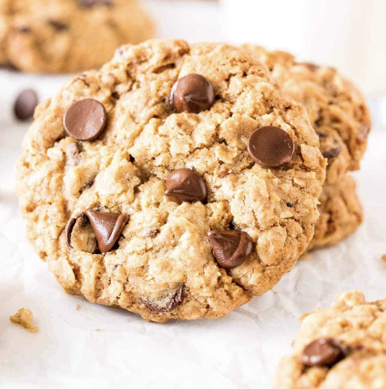

Breakfast Cookie
Though most people like breakfast, many don’t have the time (or energy) to put together a meal. Instead of skipping your morning meal, try this 5 min breakfast cookie that will satisfy your sweet tooth but also keep you full and energized!
Ingredients
- 1/2 cup oats
- 1/2 mashed banana
- 3/4 scoop vanilla protein powder
- 1-2 tsp brown sugar (you can adjust based on your sweetness preference)
- 2 tsp neutral oil
- Sprinkle of cinnamon
- Chocolate chips or raisins (optional)
Recipe
- Preheat air fryer to 325˚F
- Mix together all ingredients except for chocolate chips and raisins
- On a small sheet of parchment paper that can fit into your air fryer, form dough into a ball and press down to make a cookie. Top with chocolate chips or raisins
- Air fry for ~5 min (cooking time may vary depending on your air fryer)
If you’re making this in an oven, you can try cooking at 350˚F for ~6 min, but this is just an approximation so cook until the cookie is golden brown!